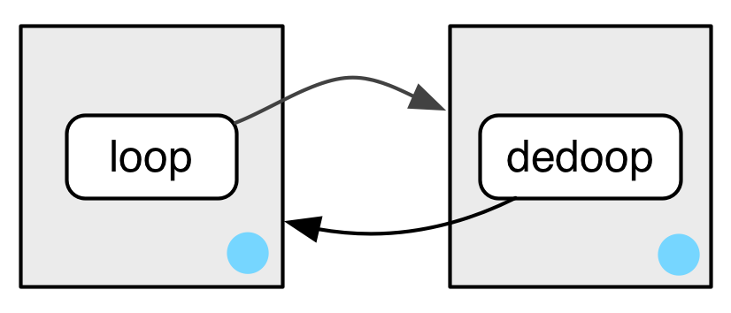

library(rlang)7 Environments
Prerequisites
Just like in Advanced R, we mainly use the {rlang} package (Henry and Wickham 2020) to work with environments.
Environment basics
Q1: List three ways in which an environment differs from a list.
A: The most important differences between environments and lists are:
- environments have reference semantics (i.e. they don’t copy-on-modify)
- environments have parents
- the contents of an environment must have unique names
- the contents of an environment are not ordered
- (environments can only be compared via
identical(); not with==) - (environments can contain themselves)
Q2: Create an environment as illustrated by this picture.

A: Let’s create an environment that contains itself.
e1 <- env()
e1$loop <- e1
# Print the environment
env_print(e1)
#> <environment: 0x590c00c194d0>
#> Parent: <environment: global>
#> Bindings:
#> • loop: <env>
# Verify that it contains itself
lobstr::ref(e1)
#> █ [1:0x590c00c194d0] <env>
#> └─loop = [1:0x590c00c194d0]Q3: Create a pair of environments as illustrated by this picture.

A: These two environments contain each other:
e1 <- env()
e2 <- env()
e1$loop <- e2
e2$dedoop <- e1
lobstr::ref(e1)
#> █ [1:0x590c00f0d1d8] <env>
#> └─loop = █ [2:0x590c00f8e0a8] <env>
#> └─dedoop = [1:0x590c00f0d1d8]
lobstr::ref(e2)
#> █ [1:0x590c00f8e0a8] <env>
#> └─dedoop = █ [2:0x590c00f0d1d8] <env>
#> └─loop = [1:0x590c00f8e0a8]Q4: Explain why e[[1]] and e[c("a", "b")] don’t make sense when e is an environment.
A: The first option doesn’t make sense, because elements of an environment are not ordered. The second option would return two objects at the same time. What data structure would they be contained inside?
Q5: Create a version of env_poke() that will only bind new names, never re-bind old names. Some programming languages only do this, and are known as single assignment languages.
A: As described in Advanced R rlang::env_poke() takes a name (as string) and a value to assign (or reassign) a binding in an environment.
e3 <- new.env()
env_poke(e3, "a", 100)
e3$a
#> [1] 100
env_poke(e3, "a", 200)
e3$a
#> [1] 200So, we want env_poke2() to test, if the supplied name is already present in the given environment. This can be checked via env_has(). If this is the case, an (informative) error is thrown.
env_poke2 <- function(env, name, value) {
if (env_has(env, name)) {
abort(paste0("\"", name, "\" is already assigned to a value."))
}
env_poke(env, name, value)
invisible(env)
}
# Test
env_poke2(e3, "b", 100)
e3$b
#> [1] 100
env_poke2(e3, "b", 200)
#> Error in `env_poke2()`:
#> ! "b" is already assigned to a value.Q6: What does this function do? How does it differ from <<- and why might you prefer it?
rebind <- function(name, value, env = caller_env()) {
if (identical(env, empty_env())) {
stop("Can't find `", name, "`", call. = FALSE)
} else if (env_has(env, name)) {
env_poke(env, name, value)
} else {
rebind(name, value, env_parent(env))
}
}
rebind("a", 10)
#> Error: Can't find `a`
a <- 5
rebind("a", 10)
a
#> [1] 10A: The primary difference between rebind() and <<- is that rebind() will only carry out an assignment when it finds an existing binding; unlike <<- it will never create a new one in the global environment. This behaviour of <<- is usually undesirable because global variables introduce non-obvious dependencies between functions.
Recursing over environments
Q1: Modify where() to return all environments that contain a binding for name. Carefully think through what type of object the function will need to return.
A: where() searches (recursively) for a given name within a given environment and its ancestors. If where() finds the name in one of these environments, it returns the environment’s name. Otherwise, it throws an error.
The definition of where() was given in Advanced R as:
where <- function(name, env = caller_env()) {
if (identical(env, empty_env())) {
# Base case
stop("Can't find `", name, "`.", call. = FALSE)
} else if (env_has(env, name)) {
# Success case
env
} else {
# Recursive case
where(name, env_parent(env))
}
}Our modified version of where() will always recurse until it reaches the empty environment. No matter if it has already found the name or not. Along the way, it will check each environment for the given name. Finally, it will return a list of environments where the binding was found; if no binding was found, the list will be empty.
Please also note how the list is initialised via the default argument, when the function is called for the first time. This is a bit confusing, which is why it’s common to wrap a recursive function inside another, more user friendly, function.
where2 <- function(name, env = caller_env(), results = list()) {
if (identical(env, empty_env())) {
# Base case
results
} else {
# Recursive case
if (env_has(env, name)) {
results <- c(results, env)
}
where2(name, env_parent(env), results)
}
}
# Test
e1a <- env(empty_env(), a = 1, b = 2)
e1b <- env(e1a, b = 10, c = 11)
e1c <- env(e1b, a = 12, d = 13)
where2("a", e1c)
#> [[1]]
#> <environment: 0x590bff309938>
#>
#> [[2]]
#> <environment: 0x590bff08c7a8>Q2: Write a function called fget() that finds only function objects. It should have two arguments, name and env, and should obey the regular scoping rules for functions: if there’s an object with a matching name that’s not a function, look in the parent. For an added challenge, also add an inherits argument which controls whether the function recurses up the parents or only looks in one environment.
A: We follow a similar approach to the previous exercise. This time we additionally check if the found object is a function and implement an argument to turn off the recursion, if desired.
fget <- function(name, env = caller_env(), inherits = TRUE) {
# Base case
if (env_has(env, name)) {
obj <- env_get(env, name)
if (is.function(obj)) {
return(obj)
}
}
if (identical(env, emptyenv()) || !inherits) {
stop("Could not find a function called \"", name, "\".",
call. = FALSE
)
}
# Recursive Case
fget(name, env_parent(env))
}
# Test
mean <- 10
fget("mean", inherits = TRUE)
#> function (x, ...)
#> UseMethod("mean")
#> <bytecode: 0x590bfe4e2010>
#> <environment: namespace:base>Special environments
Q1: How is search_envs() different to env_parents(global_env())?
A: search_envs() returns all the environments on the search path, which is “a chain of environments containing exported functions of attached packages” (from ?search_envs). Every time you attach a new package, this search path will grow. The search path ends with the base-environment. The global environment is included, because functions present in the global environment will always be part of the search path.
search_envs()
#> [[1]] $ <env: global>
#> [[2]] $ <env: package:rlang>
#> [[3]] $ <env: package:stats>
#> [[4]] $ <env: package:graphics>
#> [[5]] $ <env: package:grDevices>
#> [[6]] $ <env: package:datasets>
#> [[7]] $ <env: package:devtools>
#> [[8]] $ <env: package:usethis>
#> [[9]] $ <env: package:utils>
#> [[10]] $ <env: package:methods>
#> [[11]] $ <env: Autoloads>
#> [[12]] $ <env: package:base>env_parents(global_env()) will list all the ancestors of the global environment, therefore the global environment itself is not included. This also includes the “ultimate ancestor”, the empty environment. This environment is not considered part of the search path because it contains no objects.
env_parents(global_env())
#> [[1]] $ <env: package:rlang>
#> [[2]] $ <env: package:stats>
#> [[3]] $ <env: package:graphics>
#> [[4]] $ <env: package:grDevices>
#> [[5]] $ <env: package:datasets>
#> [[6]] $ <env: package:devtools>
#> [[7]] $ <env: package:usethis>
#> [[8]] $ <env: package:utils>
#> [[9]] $ <env: package:methods>
#> [[10]] $ <env: Autoloads>
#> [[11]] $ <env: package:base>
#> [[12]] $ <env: empty>Q2: Draw a diagram that shows the enclosing environments of this function:
f1 <- function(x1) {
f2 <- function(x2) {
f3 <- function(x3) {
x1 + x2 + x3
}
f3(3)
}
f2(2)
}
f1(1)A: This exercise urges us to think carefully about the function environment at creation time.
When f1 is defined it binds its parent environment, which is the global environment. But f2 will only be created at runtime of f1 and will therefore bind f1’s execution environment. The value 1 will also bind to the name x1 at execution time. The same holds true for x2, f3 and x3.
The following diagram visualises the relations between the function environments.

We can also inspect the binding of the environments, adding print statements to the function definition. Please note that these print statements will be evaluated at execution time. Therefore, the execution of f1(1) will print different results each time we run it.
f1 <- function(x1) {
f2 <- function(x2) {
f3 <- function(x3) {
x1 + x2 + x3
print("f3")
print(env_print())
}
f3(3)
print("f2")
print(env_print())
}
f2(2)
print("f1")
print(env_print())
}
f1(1)
#> [1] "f3"
#> <environment: 0x590bfc014578>
#> Parent: <environment: 0x590bfc0143b8>
#> Bindings:
#> • x3: <dbl>
#> <environment: 0x590bfc014578>
#> [1] "f2"
#> <environment: 0x590bfc0143b8>
#> Parent: <environment: 0x590bfc013fc8>
#> Bindings:
#> • f3: <fn>
#> • x2: <dbl>
#> <environment: 0x590bfc0143b8>
#> [1] "f1"
#> <environment: 0x590bfc013fc8>
#> Parent: <environment: global>
#> Bindings:
#> • f2: <fn>
#> • x1: <dbl>
#> <environment: 0x590bfc013fc8>Q3: Write an enhanced version of str() that provides more information about functions. Show where the function was found and what environment it was defined in.
A: To solve this problem, we need to write a function that takes the name of a function and looks for that function returning both the function and the environment that it was found in.
fget2 <- function(name, env = caller_env()) {
# Base case
if (env_has(env, name)) {
obj <- env_get(env, name)
if (is.function(obj)) {
return(list(fun = obj, env = env))
}
}
if (identical(env, emptyenv())) {
stop("Could not find a function called \"", name, "\"",
call. = FALSE
)
}
# Recursive Case
fget2(name, env_parent(env))
}
fstr <- function(fun_name, env = caller_env()) {
if (!is.character(fun_name) && length(fun_name) == 1) {
stop("`fun_name` must be a string.", call. = FALSE)
}
fun_env <- fget2(fun_name, env)
list(
where = fun_env$env,
enclosing = fn_env(fun_env$fun)
)
}
# Test
fstr("mean")
#> $where
#> <environment: base>
#>
#> $enclosing
#> <environment: namespace:base>Once you have learned about tidy evaluation, you could rewrite fstr() to use enquo() so that you’d call it more like str(), i.e. fstr(sum).
Call stacks
Q1: Write a function that lists all the variables defined in the environment in which it was called. It should return the same results as ls().
A: We can implement this dynamic scoping behaviour by explicitly referencing the caller environment. Please note that this approach returns also variables starting with a dot, an option that ls() usually requires.
ls2 <- function(env = caller_env()) {
sort(env_names(env))
}
# Test in global environment
ls(all.names = TRUE)
#> [1] ".main" ".Random.seed" "%>%" "a"
#> [5] "e1" "e1a" "e1b" "e1c"
#> [9] "e2" "e3" "env_poke2" "error_wrap"
#> [13] "f1" "fget" "fget2" "fstr"
#> [17] "has_annotations" "ls2" "mean" "rebind"
#> [21] "where" "where2"
ls2()
#> [1] ".main" ".Random.seed" "%>%" "a"
#> [5] "e1" "e1a" "e1b" "e1c"
#> [9] "e2" "e3" "env_poke2" "error_wrap"
#> [13] "f1" "fget" "fget2" "fstr"
#> [17] "has_annotations" "ls2" "mean" "rebind"
#> [21] "where" "where2"
# Test in "sandbox" environment
e1 <- env(a = 1, b = 2)
ls(e1)
#> [1] "a" "b"
ls2(e1)
#> [1] "a" "b"References
Henry, Lionel, and Hadley Wickham. 2020. Rlang: Functions for Base Types and Core r and ’Tidyverse’ Features. https://github.com/r-lib/rlang.